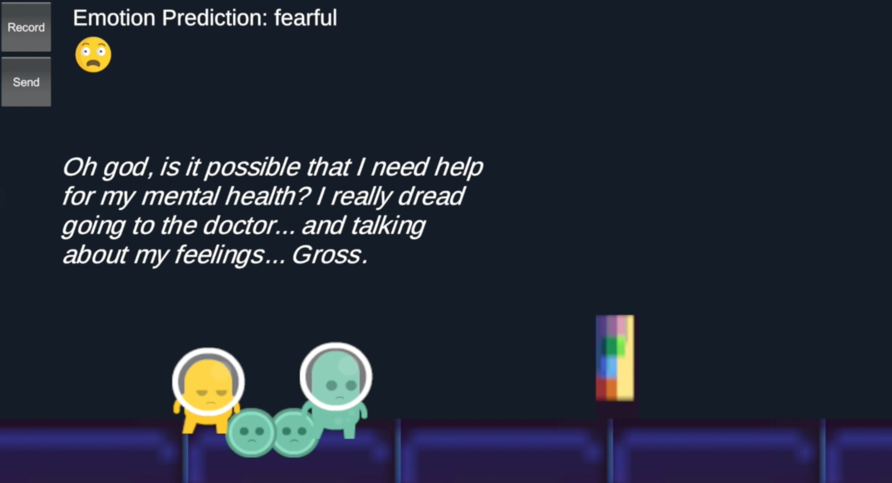

-
"Bubble, Bubble, Toil, and Trouble": An Alternative Controller Game
Methods: game development, physical computing
"Bubble, Bubble, Toil, and Trouble" is an alternative controller game about the current ongoing COVID-19 pandemic. The player needs to balance their personal human needs (physical health, mental health, finances) with their personal virus exposure levels and the local city's overall virus levels. If any of these reach failure status, then the player loses the game. They must try to stay healthy during the time period from March 2020 (beginning of "quarantine") until February 2021 (when vaccinations are more available). The player will soon see that balancing meeting all of these needs are difficult.
The current version is a Unity game that uses a potentiometer, ultrasonic sensor, and piezo buzzer connected to an Arduino. -
Emotional Voice Game Controller
Methods: game development, machine learning
This project was a proof-of-concept prototype for using transfer learning to train processed voice data to train a model that recognizes emotion/affect from voice. We're thinking about experimenting to implement this as an alternative "controller" for video games.
-
SounD CHK: Digital+Physical Music Zine+App
Methods: wireframing, designing, mobile development
Inspired by the popularization of augmented reality (AR) in 2017, my undergrad senior capstone group project was SounD CHK, a multimedia digital magazine app about the local Rochester, New York music scene. The Android app accompanied a physical zine (which was also designed and published by my group).Prototyping + Design
-
RaceTrack
Methods: think-aloud usability test, interviews, observation, prototyping, data analysis
My Prototyping and Implementation group project is RaceTrack, a mobile and smartwatch application that helps runners stay motivated by getting detailed feedback on their performance and connecting them to their family, friends,and/or coaches for support during racetime. A user could create an account as a Runner, Supporter, or Coach, but would have the option to switch between modes.
Each member of my group conducted an in-person think-aloud usability test with a participant on a medium-fidelity prototype of RaceTrack. The sessions were recorded through screen and audio capture, and data collection focused on interactions, navigational choices, and task completion success.
I was part of a 4-person group, but I was primarily focused on implementing the Supporter role interfaces (mid-fi version displayed on the images). -
PlayerSync
Methods: persona, low-fidelity prototype, high-fidelity prototype, think-aloud observation, interview
PlayerSync was a solo term project for my Social Interaction Design course. I created a prototype in Adobe XD for a mobile app that matches the user to other gamers/players based on personal gaming preferences and behaviors. It aims to centralize communication across all existing gaming platforms. -
CollegePro
Methods: data gathering (surveys), wireframing, prototyping
CollegePro was an Interaction Design group project for a website called CollegePro, that aimed to centralize information resources regarding academic advising, career, and research in a personalized way and allows students to communicate with others. -
This Portfolio
Methods: website design & development
I created this simple portfolio site to share my research and design work throughout the years!